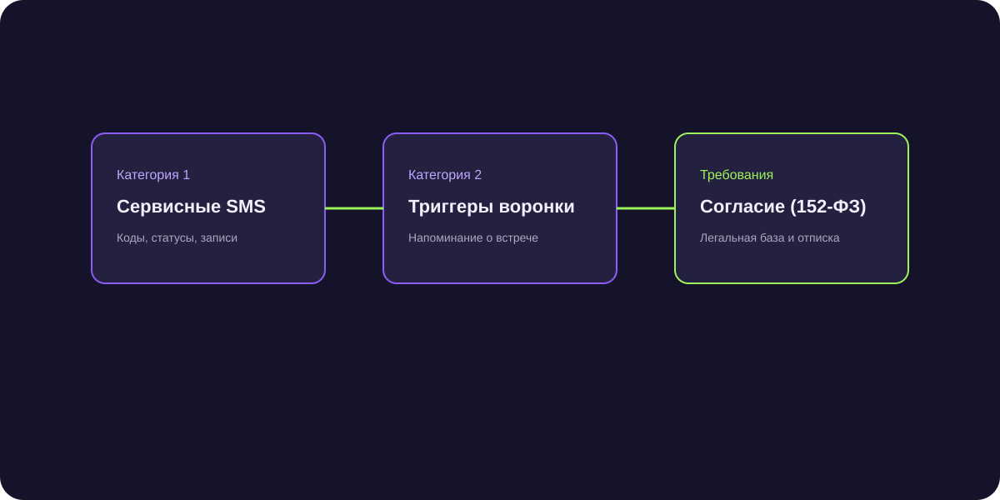

SMS-рассылка клиентам: сервисные уведомления, триггеры и правила 152-ФЗ
SMS-рассылка клиентам в современном бизнесе трансформировалась из средства агрессивного промоушена в точечный сервисный канал с гарантированной доставкой критически важных уведомлений прямо на экран телефона.

Короткий ответ
SMS-рассылка клиентам в B2B наиболее эффективна как сервисный и триггерный инструмент: для подтверждения назначенных онлайн-встреч, отправки кодов двухфакторной аутентификации, уведомлений об изменении статуса счета и срочных напоминаний. Из-за высокой стоимости одного сообщения рекламный спам по SMS нерентабелен, а отправка сообщений требует обязательного согласия абонента по закону о рекламе.
Где SMS незаменимы в B2B-воронке
В отличие от почты и мессенджеров, SMS не требуют интернета и доставляются даже при слабом сигнале сети. Основные сценарии:
- Напоминание о зум-встрече за 15 минут: снижает процент недошедших до созвона ЛПР (No-show rate) с 35% до 8%.
- Оповещение об отгрузке или выставлении счета: «Иван, счет №412 сформирован и отправлен на вашу почту».
- Срочная сервисная информация: оповещение о технических работах на серверах или смене реквизитов.
Юридические требования: 152-ФЗ и Закон «О рекламе»
Отправка коммерческих SMS без зафиксированного согласия грозит штрафами до 500 000 рублей от ФАС за каждое сообщение:
- Получайте явное согласие: чекбокс в форме на сайте или пункт в договоре («согласен на получение информационных SMS»).
- Используйте буквенное имя отправителя (Sender ID), зарегистрированное у мобильных операторов через официальный шлюз.
- Обеспечьте простой способ отписки от рассылки по первому требованию клиента.
Экономика канала: SMS против Telegram
Стоимость одного SMS в России составляет от 3 до 5 рублей, тогда как отправка сообщения в Telegram через официального бота или сервис автоматизации обходится в десятки раз дешевле. Разумная стратегия — сначала слать уведомление в мессенджер, а при отсутствии прочтения через 30 минут досылать SMS.
Снижение неявок на демонстрацию софта в 4 раза
Внедрение автоматического SMS-напоминания со ссылкой на Zoom за 20 минут до встречи сократило долю сорванных созвонов с 32% до 7% в отделе продаж из 12 менеджеров.